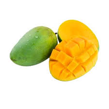

tentangbuah.com
Mangga

Mangga memiliki vitamin C dan serat tinggi yang dapat membantu menurunkan kadar
kolesterol
jahat. Buah tropis ini juga kaya akan kalium yang amat dibutuhkan tubuh. Kalium
berfungsi
menyeimbangkan sel cairan tubuh guna mengontrol tekanan darah dan detak jantung. Selain rasanya
lezat,
mangga
kaya manfaat bagi kesehatan tubuh. Bahkan buah yang satu ini juga dipercaya mampu mencegah berbagai
penyakit
berbahaya.
Mangga mengandung rendah kalori dan serat tinggi. Mangga merupakan sumber vitamin
A, C
dan
E,
serta memiliki kandungan folat, B6, zat besi, hingga kalsium. Buah yang satu ini juga merupakan
sumber
antioksidan baik, mengandung phytochemical yang baik bagi kesehatan tubuh manusia.
Bahkan banyak pula olahan makanan maupun produk kecantikan yang mencantumkan mangga sebagai salah
satu
bahan
dasarnya. Selain aromanya khas, mangga dapat memberikan manfaat baik bagi kulit. Kandungan vitamin C
dalam
mangga tak kalah dari jeruk, anggur, lemon, atau tomat. Lantas apa saja manfaat mangga?
Khasiat Mangga
- Menurunkan kolesterol
- Menjaga kesehatan jantung
- Mencegah kanker
- Mengatasi obesitas
- Menyembukan anemia
- Meningkatkan kekebalan tubuh
- Menjaga kesehatan mata
Daftar Harga
| Jenis Mangga | Harga | |
|---|---|---|
| Per Kilo | Per Biji | |
| Mangga Apel | 60.000 | 6.000 |
| Mangga Madu | 70.000 | 7.000 |
| Mangga Manalagi | 55.000 | 5.500 |
| Mangga Alpukat | 58.000 | 6.000 |
Menuju Ke SubJudul